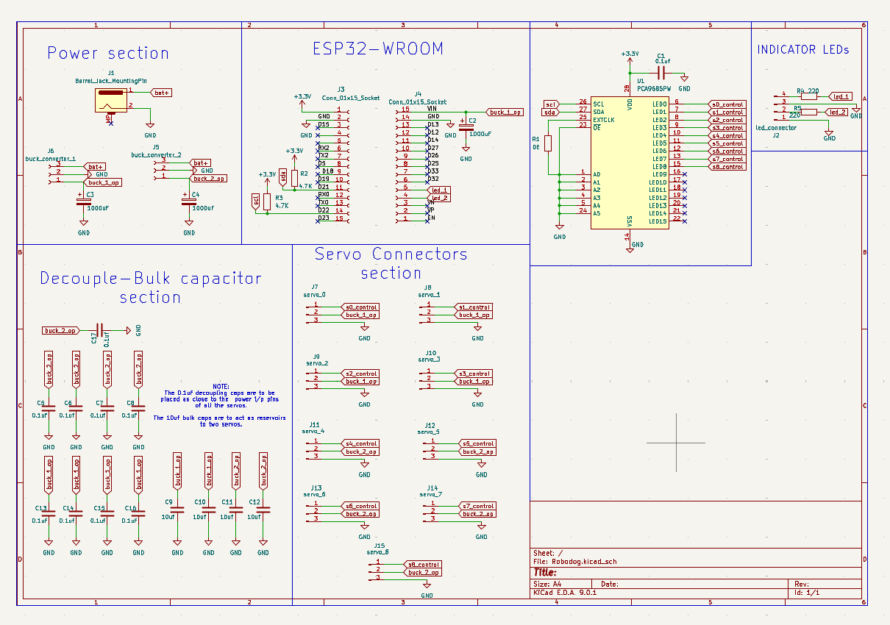
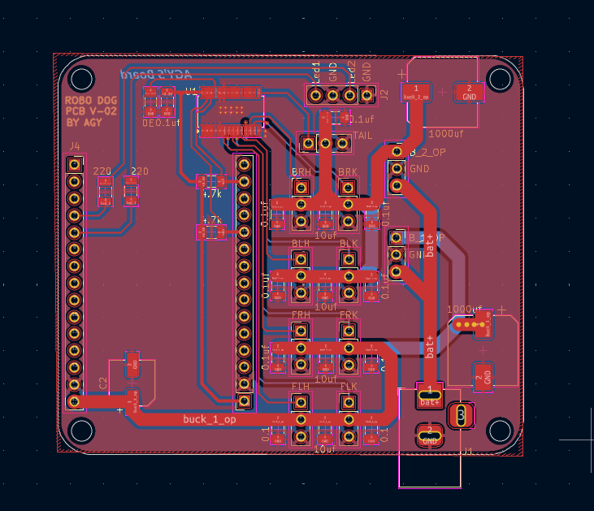

01
RoboDog — Quadruped Robot
Custom PCB, from schematic to routed board to walking hardware.


An 8-servo quadruped built around a PCB I designed myself in KiCad — not a breadboard prototype. The board integrates an ESP32-WROOM, a PCA9685 PWM driver for all 8 servo channels, dual buck converters for clean regulated power, and a decoupling network sized to keep every servo's power rail stable under load. Schematic-to-layout ownership: four functional sections (power, MCU, decoupling, servo connectors), routed and fabricated.
ESP32-WROOM
PCA9685
KiCad
PCB Design
Power Electronics
C++